|
|
This was first published on https://blog.dbi-services.com/a-short-glance-at-attunity-replicate (2016-04-16)
Republishing here for new followers. The content is related to the the versions available at the publication date
If you follow my blog, you should know that I really like Dbvisit replicate because it’s simple, robust, has good features and excellent support. But that’s not a reason to ignore other alternatives (and this is the reason of http://www.dbi-services.com/news-en/replication-event-2/). When you have heterogeneous sources (not only Oracle) there is Oracle Golden Gate with very powerful possibilities, but maybe not an easy learning curve because of lack of simple GUI and setup wizard. You may need something more simple but still able to connect to heterogeneous sources. In this post, I am testing another logical replication software, Attunity replicate which has a very easy GUI to start and has connectors (called ‘endpoints’) for lot all databases. I’m trying the free trial version, installed on my laptop (Windows 10) and accessed through web browser. Here is how the Attunity Replicate architecture looks like: 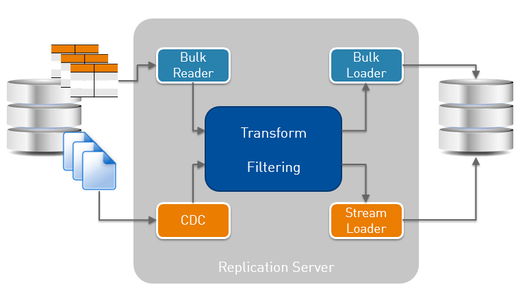 Bulk reader/loader are for initialization, CDC is the redo mining process and Stream Loader the one that applies to destination. Those are connectors to RDBMS (and other source/destinations). A common engine does the filtering and transformation.
I define a new replication task where my goal is to replicate one simple table, EMP2, a copy of SCOTT.EMP: 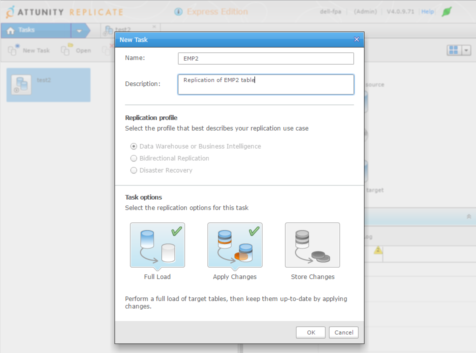 This task will do the first initialization and run real-time replication.
I need to define the databases. Interestingly, there is nothing to install on source and destination. The replication server connects only through SQL*Net: 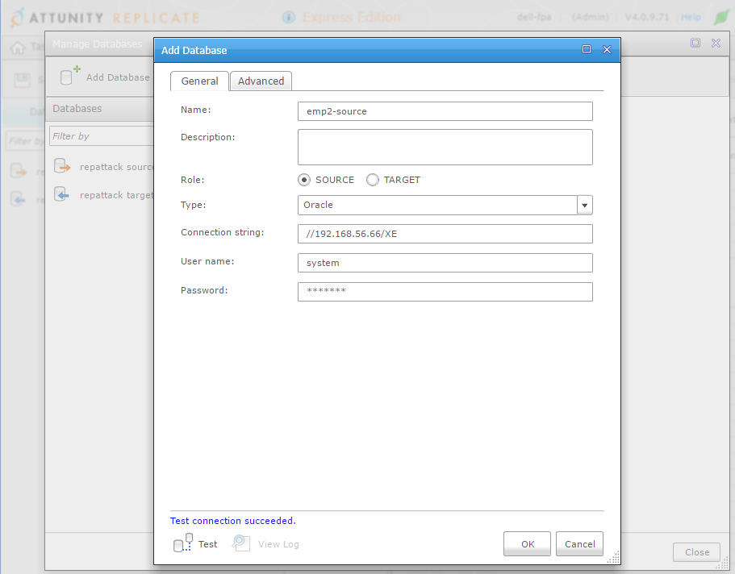 I use SYSTEM here for simplicity. You need a user that can access some system tables and views, be able to create a directory,read files, etc.
That’s probably defined in the documentation, but I like to do my first trial just by exploring. In case you missed one, don’t worry, the ‘test’ button will check for everything. Here is an example when you try to use SCOTT: 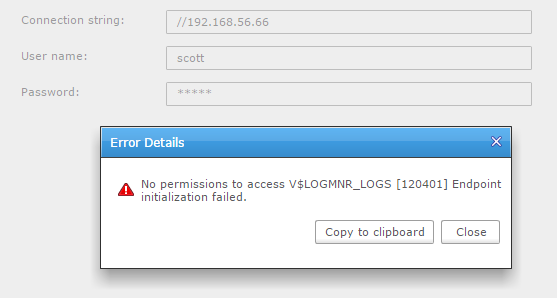 V$LOGMNR_LOGS… That’s interesting. LogMiner may not be the most efficient, and may not support all datatypes, but it’s the only Oracle supported way to read redo logs.
Advanced tab is very interesting about it as it shows that there are two possibilities to mine Oracle redo stream: use LogMiner or read binary files (archived + online from source, or only archived logs shipped to another location). It supports ASM (and RAC) and it supports encryption (TDE). 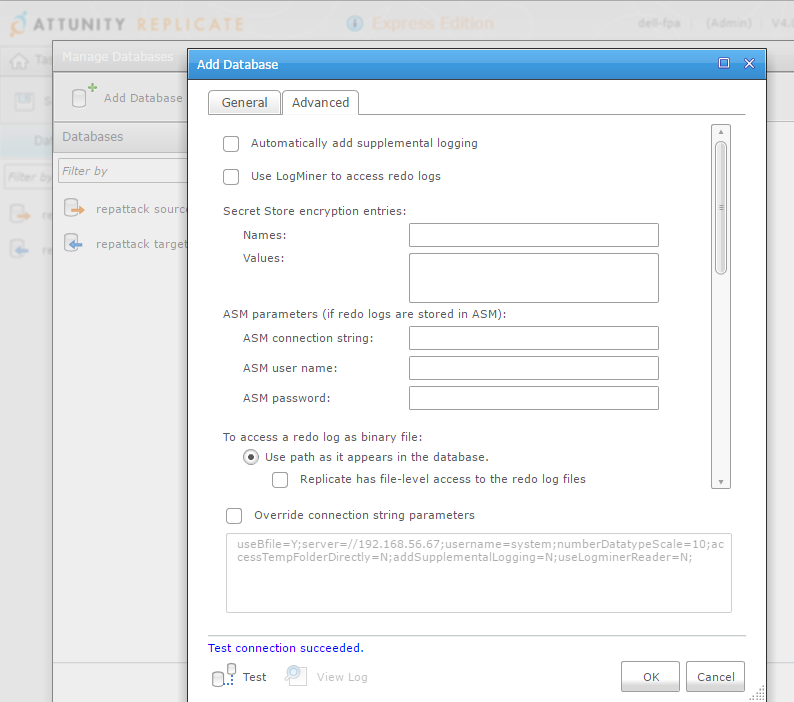
I’ve unchecked ‘automatically add supplemental logging’ here because it’s something I want to do manually because it requires an exclusive lock on the source tables. You can let it do automatically if you have no application running on the source when you will start, but that’s probably not the case. Doing it manually let me do this preparation off business hours. The problem is that you have then to run it for all the tables:
Something is missing here for me: I would like to run the DDL manually, but have the script generated automatically.
Direct-path insert is something that we want for the bulk load, except if we have tables or indexes that do not support OCI direct-path inserts. Then it will use conventional array insert. But it seems that this setting is per-task and not per-table. 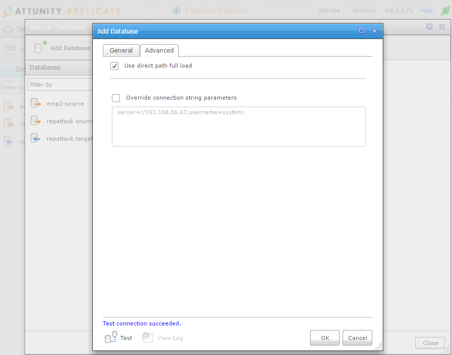
I’ve selected my table with the ‘Table Selection’ wizard: 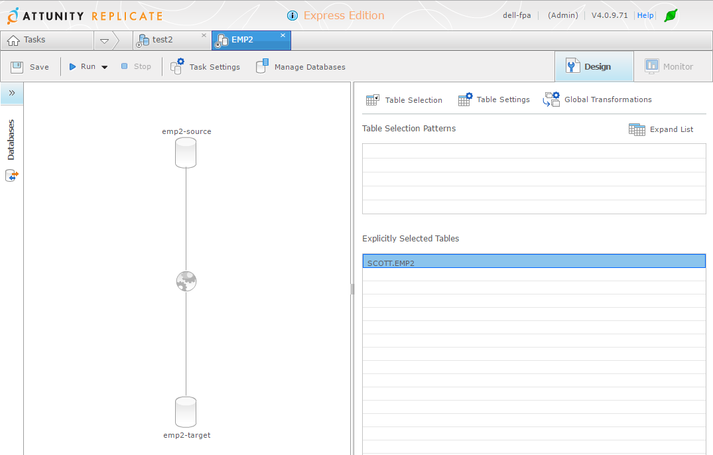
With ‘Table Settings’ you can customize columns, filter rows: 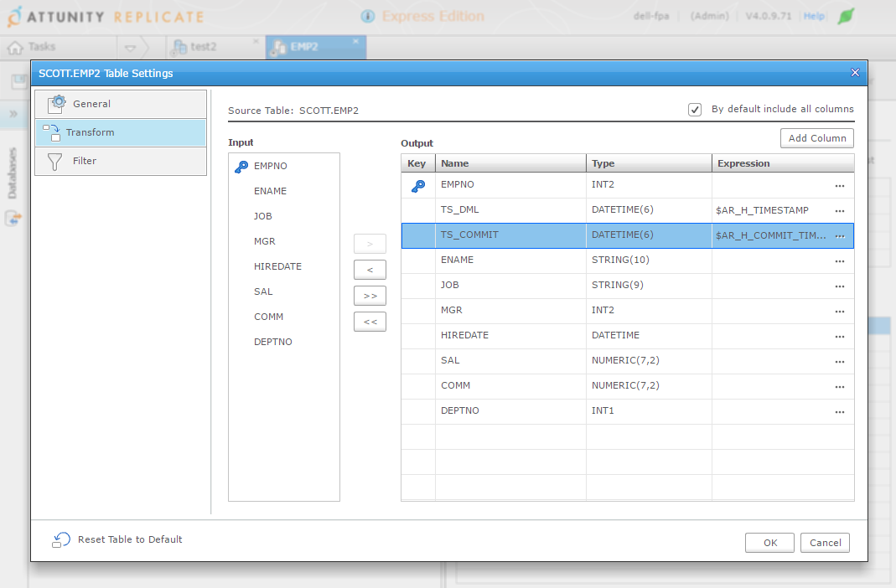 With ‘Global Transformation’ you can add rules to transform tables or columns that follow a pattern.
There is a ‘Run’ button that will bulk load the tables and start real-time replication, but let’s look at the ‘advanced’ options: 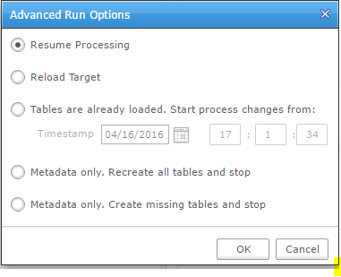 You can managed the initial load yourself, which is good (for example to initialize with a RMAN duplicate or an activated standby) but I would like to set an SCN there instead of a timestamp. Ability to reload is good, but that’s something we may want to do not for all tables but, for example, for one table that we reorganized at the source.
Those are the cases where simple GUI wizard have their limits. It’s good to start but you may quickly have to do things a little more complex.
If I click on the simple run button, everything is smooth: it will do the initial load and then run replication.

I started a transaction on my table that I’ve not commited yet:
03:15:50 SQL> update emp2 set sal=sal+100; 14 rows updated.
And the behaviour looks ok: wait the end of current transactions: 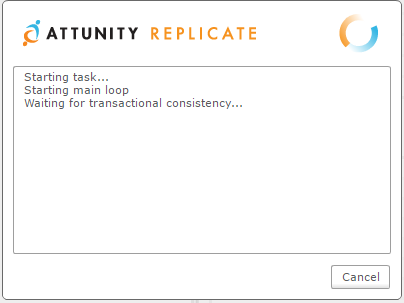
My good surprise is that there is no lock waits, which would have blocked DML activity.
From trace files (yes this is my first trial and I’ve already set trace for all session coming from repctl.exe and anyway, I cannot post a blog with only screenshots…) it reads V$TRANSACTION every few seconds:
===================== PARSING IN CURSOR #140631075113120 len=49 dep=0 uid=5 oct=3 lid=5 tim=1460820357503567 hv=3003898522 ad='86236a30' sqlid='6ffgmn2thrqnu' SELECT XIDUSN, XIDSLOT, XIDSQN FROM V$TRANSACTION END OF STMT PARSE #140631075113120:c=3999,e=4414,p=0,cr=2,cu=0,mis=1,r=0,dep=0,og=1,plh=3305425530,tim=1460820357503547 EXEC #140631075113120:c=0,e=62,p=0,cr=0,cu=0,mis=0,r=0,dep=0,og=1,plh=3305425530,tim=1460820357503922 WAIT #140631075113120: nam='SQL*Net message to client' ela= 22 driver id=1413697536 #bytes=1 p3=0 obj#=-1 tim=1460820357504052 FETCH #140631075113120:c=0,e=392,p=0,cr=0,cu=2,mis=0,r=2,dep=0,og=1,plh=3305425530,tim=1460820357504540 WAIT #140631075113120: nam='SQL*Net message from client' ela= 1033 driver id=1413697536 #bytes=1 p3=0 obj#=-1 tim=1460820357505766 ... *** 2016-04-17 03:26:52.265 WAIT #140631074940472: nam='SQL*Net message from client' ela= 5216008 driver id=1413697536 #bytes=1 p3=0 obj#=-1 tim=1460820412265018 EXEC #140631074940472:c=0,e=25,p=0,cr=0,cu=0,mis=0,r=0,dep=0,og=1,plh=735420252,tim=1460820412265099 WAIT #140631074940472: nam='control file sequential read' ela= 8 file#=0 block#=1 blocks=1 obj#=-1 tim=1460820412265137 WAIT #140631074940472: nam='control file sequential read' ela= 3 file#=0 block#=16 blocks=1 obj#=-1 tim=1460820412265152 WAIT #140631074940472: nam='control file sequential read' ela= 3 file#=0 block#=18 blocks=1 obj#=-1 tim=1460820412265163 WAIT #140631074940472: nam='control file sequential read' ela= 3 file#=0 block#=1 blocks=1 obj#=-1 tim=1460820412265205 WAIT #140631074940472: nam='control file sequential read' ela= 2 file#=0 block#=16 blocks=1 obj#=-1 tim=1460820412265215 WAIT #140631074940472: nam='control file sequential read' ela= 3 file#=0 block#=18 blocks=1 obj#=-1 tim=1460820412265225 WAIT #140631074940472: nam='control file sequential read' ela= 3 file#=0 block#=281 blocks=1 obj#=-1 tim=1460820412265235 WAIT #140631074940472: nam='SQL*Net message to client' ela= 2 driver id=1413697536 #bytes=1 p3=0 obj#=-1 tim=1460820412265257 FETCH #140631074940472:c=0,e=168,p=0,cr=0,cu=0,mis=0,r=1,dep=0,og=1,plh=735420252,tim=1460820412265278 *** 2016-04-17 03:26:57.498 WAIT #140631074940472: nam='SQL*Net message from client' ela= 5233510 driver id=1413697536 #bytes=1 p3=0 obj#=-1 tim=1460820417498816 EXEC #140631074940472:c=0,e=125,p=0,cr=0,cu=0,mis=0,r=0,dep=0,og=1,plh=735420252,tim=1460820417499357 WAIT #140631074940472: nam='control file sequential read' ela= 42 file#=0 block#=1 blocks=1 obj#=-1 tim=1460820417499592 WAIT #140631074940472: nam='control file sequential read' ela= 26 file#=0 block#=16 blocks=1 obj#=-1 tim=1460820417499819 WAIT #140631074940472: nam='control file sequential read' ela= 16 file#=0 block#=18 blocks=1 obj#=-1 tim=1460820417499890 WAIT #140631074940472: nam='control file sequential read' ela= 14 file#=0 block#=1 blocks=1 obj#=-1 tim=1460820417500081 WAIT #140631074940472: nam='control file sequential read' ela= 17 file#=0 block#=16 blocks=1 obj#=-1 tim=1460820417500177 WAIT #140631074940472: nam='control file sequential read' ela= 11 file#=0 block#=18 blocks=1 obj#=-1 tim=1460820417500237 WAIT #140631074940472: nam='control file sequential read' ela= 47 file#=0 block#=281 blocks=1 obj#=-1 tim=1460820417500324 WAIT #140631074940472: nam='SQL*Net message to client' ela= 7 driver id=1413697536 #bytes=1 p3=0 obj#=-1 tim=1460820417500470 FETCH #140631074940472:c=2000,e=1109,p=0,cr=0,cu=0,mis=0,r=1,dep=0,og=1,plh=735420252,tim=1460820417500550
So it seems that it waits for a point where there is no current transaction, which is the right thing to do because it cannot replicate transactions that start before redo mining. However, be careful, there is a ‘transaction consistency timeout’ that defaults to 10 minutes and it seems that the load just starts after this ‘timeout’. The risk is that if those transactions finally change the tables you replicate, you will get a lot of replication conflicts.
So I commit my transaction and the bulk load starts.
03:15:45 SQL> commit;
Here is what we can see from the trace:
PARSING IN CURSOR #139886395075952 len=206 dep=0 uid=5 oct=3 lid=5 tim=1460819745436746 hv=3641549327 ad='8624b838' sqlid='g2vhbszchv8hg' select directory_name from all_directories where directory_path = '/u01/app/oracle/fast_recovery_area/XE/onlinelog' and (directory_name = 'ATTUREP_27C9EEFCEMP2' or 'ATTUREP_' != substr(directory_name,1,8) ) END OF STMT
This is a clue that Attunity Replicate creates a directory object (It’s actually created in SYS and I would prefer to be informed of that kind of things…) And here is how redo is read – through SQL*Net:
WAIT #0: nam='BFILE get length' ela= 18 =0 =0 =0 obj#=-1 tim=1460819745437732 LOBGETLEN: c=0,e=84,p=0,cr=0,cu=0,tim=1460819745437768 WAIT #0: nam='SQL*Net message to client' ela= 3 driver id=1413697536 #bytes=1 p3=0 obj#=-1 tim=1460819745437787 WAIT #0: nam='SQL*Net message from client' ela= 225 driver id=1413697536 #bytes=1 p3=0 obj#=-1 tim=1460819745438025 WAIT #0: nam='BFILE open' ela= 53 =0 =0 =0 obj#=-1 tim=1460819745438113 LOBFILOPN: c=0,e=78,p=0,cr=0,cu=0,tim=1460819745438125 WAIT #0: nam='SQL*Net message to client' ela= 2 driver id=1413697536 #bytes=1 p3=0 obj#=-1 tim=1460819745438137 WAIT #0: nam='SQL*Net message from client' ela= 196 driver id=1413697536 #bytes=1 p3=0 obj#=-1 tim=1460819745438341 WAIT #0: nam='BFILE internal seek' ela= 15 =0 =0 =0 obj#=-1 tim=1460819745438379 WAIT #0: nam='BFILE read' ela= 13 =0 =0 =0 obj#=-1 tim=1460819745438401 WAIT #0: nam='SQL*Net message to client' ela= 2 driver id=1413697536 #bytes=1 p3=0 obj#=-1 tim=1460819745438410 LOBREAD: c=0,e=56,p=0,cr=0,cu=0,tim=1460819745438416 WAIT #0: nam='SQL*Net message from client' ela= 208 driver id=1413697536 #bytes=1 p3=0 obj#=-1 tim=1460819745438636 WAIT #0: nam='BFILE internal seek' ela= 4 =0 =0 =0 obj#=-1 tim=1460819745438672 WAIT #0: nam='BFILE read' ela= 14 =0 =0 =0 obj#=-1 tim=1460819745438695 WAIT #0: nam='SQL*Net message to client' ela= 1 driver id=1413697536 #bytes=1 p3=0 obj#=-1 tim=1460819745438706 LOBREAD: c=0,e=48,p=0,cr=0,cu=0,tim=1460819745438713 WAIT #0: nam='SQL*Net message from client' ela= 361 driver id=1413697536 #bytes=1 p3=0 obj#=-1 tim=1460819745439086 WAIT #0: nam='BFILE internal seek' ela= 4 =0 =0 =0 obj#=-1 tim=1460819745439124 WAIT #0: nam='BFILE read' ela= 4 =0 =0 =0 obj#=-1 tim=1460819745439135 WAIT #0: nam='SQL*Net message to client' ela= 2 driver id=1413697536 #bytes=1 p3=0 obj#=-1 tim=1460819745439144 WAIT #0: nam='BFILE internal seek' ela= 2 =0 =0 =0 obj#=-1 tim=1460819745439156 WAIT #0: nam='BFILE read' ela= 2 =0 =0 =0 obj#=-1 tim=1460819745439167 WAIT #0: nam='BFILE internal seek' ela= 2 =0 =0 =0 obj#=-1 tim=1460819745439178 WAIT #0: nam='BFILE read' ela= 2 =0 =0 =0 obj#=-1 tim=1460819745439188So it probably reads the redo through utl_file and transfer it as a BLOB. This is good for simplicity when we want to install nothing on the source, but on the other hand, this means that filtering cannot be done upstream.
The GUI show the overall monitoring. Here are my transactions that are captured and buffered until they are commited: 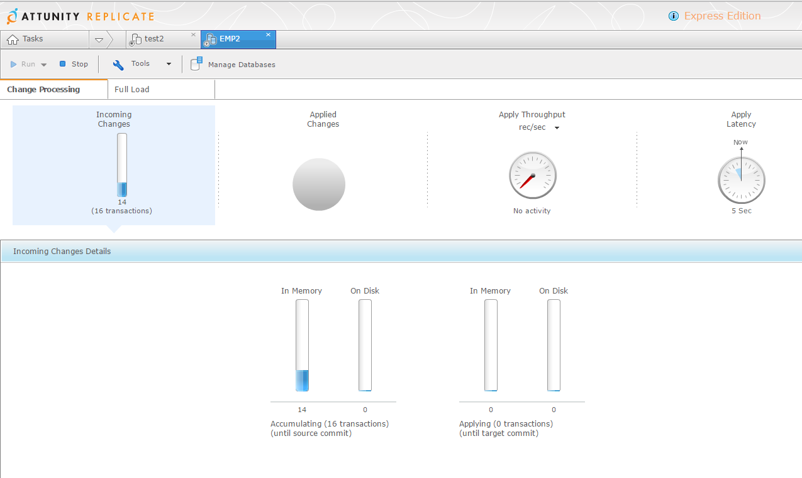
and once they are commited they are applied: 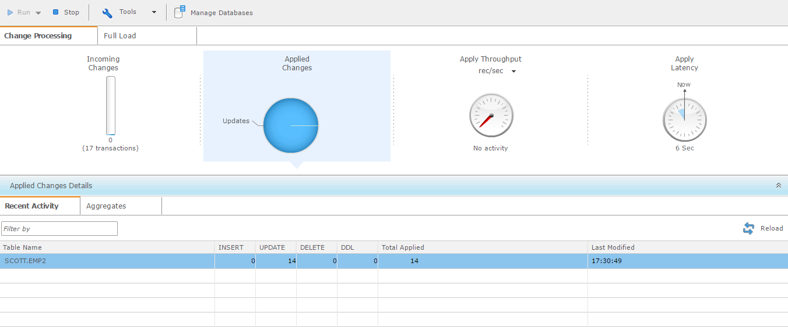
I did some DML to create some replication conflict, which is something we have to deal with logical replication (because of constraints, triggers, 2-way replication, etc) and the default management is a bit loose in my opinion: log it and continue:
 Ignoring a problem and continuing makes the target unreliable until the issue is manually solved.
Ignoring a problem and continuing makes the target unreliable until the issue is manually solved.
This behavior can be customizable for the whole replication task. This is the default: 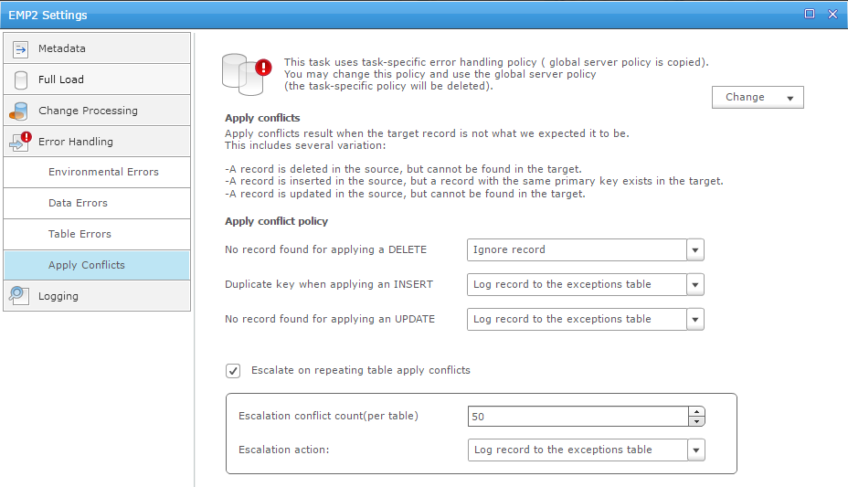 but we can customize it: either evict a table from the replication or stop the whole replication. I prefer the latest because only the latest keeps full consistency on target. But then we have to be sure that no conflicts exists, or are resolved automatically.
I’ve not seen a table-level way to define automatic conflict resolution. I real life, it’s better to stop whenever any unexpected situation occurs (i.e when one redo record do not change exactly one row) but we may have to accept specific settings for few tables where the situation is expected (because of triggers, cascade constraints, etc).
Attunity Replicate buffers the transactions and apply them when commit is encountered, which is better in case of many rollbacks, but may lead to a replication gap in case of long transactions. From the traces I’ve seen, the dictionary information is read from the source database each time it is needed. This is probably higher overhead on source when compared with solutions that get dictionary changes from the redo stream. And this probably raise more limitation on DDL (replication is not possible on changes occurring after ADD, DROP, EXCHANGE and TRUNCATE partition are not ).
Attunity GUI is very nice for simple setups and for graphical monitoring, and I understand why it is well known in SQL Server area for this reason.
The number of supported databases (or rather ‘endpoints’ because it goes beyond databases) is huge:
There are several logical replication solutions, with different prices, different design, different philosophy. I always recommend a Proof of Concept in order to see which one fits your context. Test everything: the setup and configuration alternatives, the mining of production workload, with DDL, special datatypes, high redo rate, etc. Don’t give up on first issue, it’s also a good way to consider documentation quality and support efficiency. And think about all the cases where you will need it: real-time BI, auditing, load balancing, offloading, migrations, data movement to and from the Cloud.
|
|
{kind=link}
{kind=link}
{kind=link}
{kind=link}
{kind=link}
{kind=link}
{kind=link}
{kind=link}
{kind=link}
{kind=link}
{kind=link}
{kind=link}
{kind=link}
{kind=link}
{kind=link}
Hi Franck
Thanks for the detailed blog. I will re-read it multiple times to fully absorb the details.
Recently we went for Attunity Replicate. I come from Sybase (now owned by SAP) replication background. Sybase Replication Server is a very mature product and has been around for more than 20 years now.
I see Attunity with nice GUI. However the set up effort is more or less same in any Replication. GUI perhaps makes it less intimidating or more friendly !! With command line interface and scripts we can achieve the same effect and know bit more about the nuts and bolts (which BTW GUI will hide from you !!)
Do you happen to what database Attunity itself uses to store all the metadata : endpoints, tasks, tables, etc. ?
I find a few features missing from Attunity : – trends and counters (server, tables, rows, latency) to track patterns – ability to at least query the system data in some way – converting source DMLs into different target DMLs (e.g. all inserts/updates/deletes from source going as inserts at target for auditing/history) etc. or executing a custom logic like stored procedure at target – sending system events (e.g. backups) as transaction which can trigger similar/other event on target
Overall I must say it is a good product out of the box but there is huge scope to add features.
Avinash
Hi Avinash, fancy meeting you here!
I know you have since received answers and clarification to most if not all your observations, but for the benefit of other passer-by’s allow me to me a few quick comments.
This is not meant to be an exhaustive answer, just some directions.
>> Thanks for the detailed blog. I will re-read it multiple times to fully absorb the details.
Ditto! Nice job Franck.
>> Do you happen to what database Attunity itself uses to store all the metadata : endpoints, tasks, tables, etc. ?
SQLite.
>> – trends and counters (server, tables, rows, latency) to track patterns >> – ability to at least query the system data in some way
There is some available through the GUI monitor, which in recent release can readily be saved in CSV files. Some can be queried in the SQLite file, notably to see when a table was last loaded, how many rows and such, There is a modest CLI tool REPCTL returning live stats in Json format.
Replicate is a relative young product, engineered first and foremost to get the core job done. Robust, Reliable, Fast, Easy to use, many ‘end points’. As the product matures we have added more endpoints (recent ones Kafka, Eventhub, Sap…), and added more ‘enterprise’ level features. For that our strategic direction is an ‘Enterprise manager’ giving a nice view of all replication tasks across all replicate servers. You’ll find that the enterprise manager will give a much more concise, dense, view of states, stats, notifications, audits. It also offer a public RestAPI to get all those counters for reporting and trending. (This will replace REPCTL.)
>> – converting source DMLs into different target DMLs
Indirectly. There is an ‘advance run’ feature “create missing table and stop” This will allow you to create a template to be tweak to your hearts content before commencing data load/flow. Hint : Enable VERBOSE logging for the TARGET_LOAD and/or TARGET_APPLY category to ‘see’ the SQL in the task logs, ready to be grabbed.
>> (e.g. all inserts/updates/deletes from source going as inserts at target for auditing/history) etc.
Replicate offers ‘STORE CHANGE’ in addition to, or instead of, the traditional ‘APPLY CHANGE’. Always has.
>> or executing a custom logic like stored procedure at target – sending system events (e.g. backups) as transaction which can trigger similar/other event on target
There are opportunities there, but nothing much in place today other than per-change event target lookups (procedure calls!?). Talk some more to use about specific needs, and if there is a general purpose application we will review and consider it. No promises, but if we hear it clearly enough…
>> Overall I must say it is a good product out of the box but there is huge scope to add features.
Thanks! Best regards, Hein van den Heuvel
Hein it is user friendly offcourse . My experience is lack of support or knowledge on the Tool. your insights are useful and will try to apply the learning . But does anyone have the knowledge on how it will work wit Oracle Data Guard
We are using attinuity and are facing memory constraint issues any work around that you all have
Hi. Is it possible to replicate to 2 destinations points from a single source?